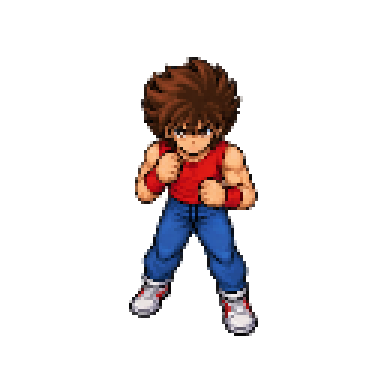

SAINT SEIYAASCENSÃO DO COSMOPROTÓTIPO AUTÔNOMO v0.6 · CAMPO DE PROVAS
DEMONSTRAÇÃO WEB
SANTUÁRIO DE ATHENA ✦ GRÉCIA
Campo de Provas
✦ ARENA 4K⚔ COMBATE EM TEMPO REAL◈ SEIYA BASE
♘
SEIYA DE PÉGASOLV 01
VIDA 150 / 150✦ COSMO 55 / 100
GUARDAS DO SANTUÁRIO
04 EM CAMPO0 derrotados
PREPARE-SE PARA O COMBATE
✦ CAMPO DE PROVAS DO SANTUÁRIO ·SUL
WASD mover · J socar · K Meteoro de Pégaso
COMBATE PAUSADO
Pressione ESC para continuar.
✦
SANTUÁRIO DE ATHENA
Enfermaria Sagrada
Seu Cosmo se apagou na batalha. Os guardiões trouxeram Seiya à enfermaria.
NÍVEL PRESERVADO01
EXPERIÊNCIA0
DRACMAS0
Sua evolução não é perdida após a derrota.
✦ FICHA DO CAVALEIROBRONZE · FORMA BASE

SEIYACavaleiro de Pégaso
EXP 0 / 100PRÓX. NÍVEL 02
◈ 0000 DRACMAS
⚔ 00 VITÓRIAS
✚ 00 DERROTAS
⚔ MISSÃO ATIVACAMPO DE PROVAS
O despertar do Cosmo
Enfrente os guardas do Santuário, domine o Meteoro de Pégaso e fortaleça sua constelação.
Guardas derrotados0 / 10
RECOMPENSAS DE COMBATEXP ✦ DRACMAS
⌘ COMANDOSTECLADO / MOUSE
W A S DMovimentar
JAtaque básico
KMeteoro de Pégaso
FCombate automático
GAlternar efeitos
ESCPausar
MANUAL DO CAVALEIRO
Como jogar
WASD ou setas movimentam Seiya pela arena de areia. J ou clique no campo de batalha executa ataques básicos; K lança o Meteoro de Pégaso quando houver Cosmo suficiente.
F ativa o combate automático. G alterna os efeitos. ESC pausa. R reinicia os inimigos sem apagar a evolução.
Quando sua vida chegar a zero, você será levado à Enfermaria Sagrada. Receba o tratamento e retorne ao campo. Nível, XP e Dracmas serão preservados.
Esta demonstração funciona diretamente no navegador, sem instalação, e é independente do cliente original Phaser/React.